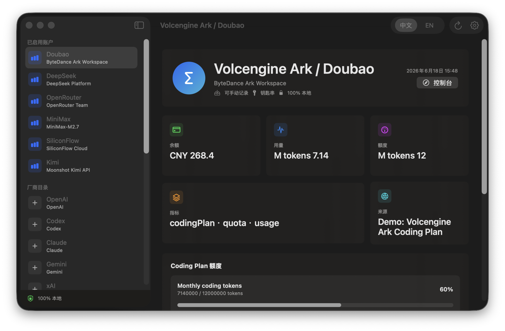
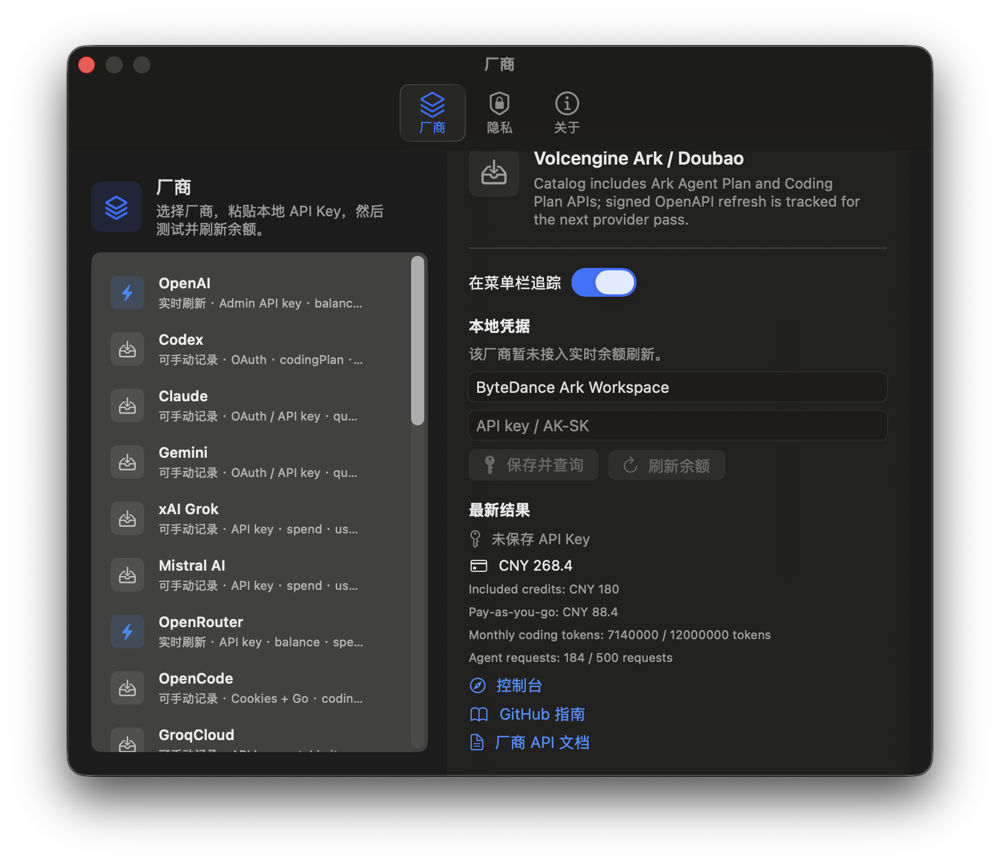
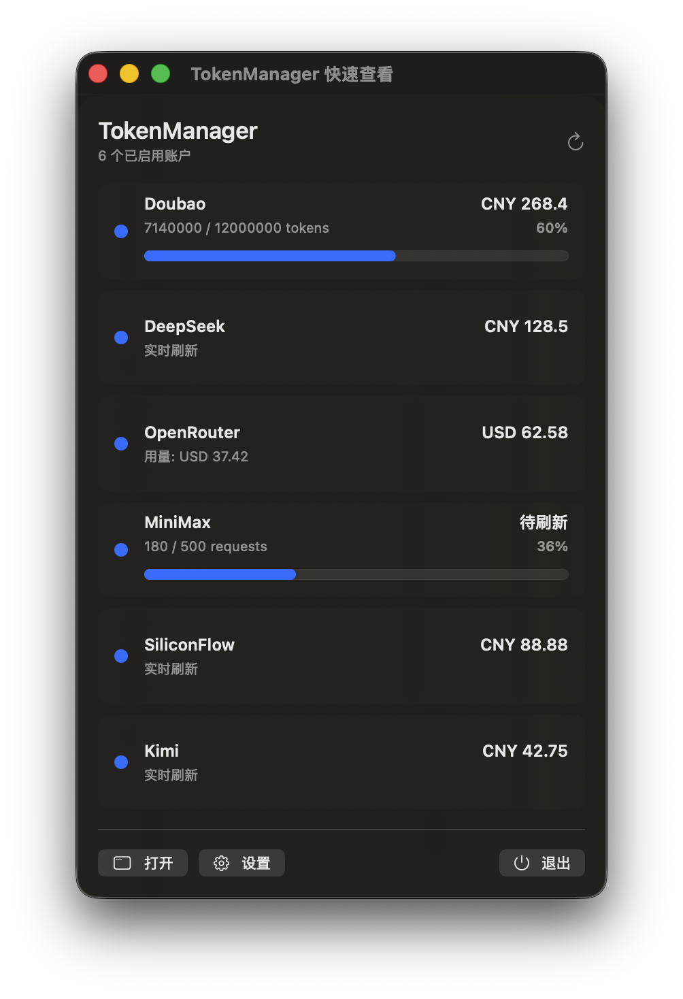

macOS menu bar · local only · no project server
TokenManager
Track AI API balances, coding-plan quotas, usage windows, and provider status from one native menu bar app.
100% local data path
API keys stay in macOS Keychain. Config stores references only.
No TokenManager server
No proxy, no cloud sync, no account database.
Direct provider calls
Refresh requests go from your Mac to the provider APIs you enable.
Native first
Built for macOS status-bar workflows



Provider catalog
One menu bar for coding plans and API accounts
Every highlighted provider links to a GitHub guide with credential type, endpoint status, and local-only handling notes.
DeepSeekAPI key · live balance
MiniMaxAPI key · coding plan
OpenRouterAPI key · credits
KimiToken · balance
Volcengine ArkAPI key / AK-SK
StepFunStep Plan API key
AlibabaCookies / API key
Alibaba TokenCookies
CodexOAuth
ClaudeOAuth / API key
GeminiOAuth / API key
OpenCodeCookies + Go
z.aiAPI key
KiloAPI key
KiroCLI
AntigravityLocal
Install paths
App bundle, package, DMG, or npm wrapper
Use the native app for the menu bar experience, or use the CLI for one-off local balance checks.
npm install -g tokenmanager
tokenmanager build
tokenmanager launch
printf '%s' "$DEEPSEEK_API_KEY" \
| tokenmanagerctl balance --provider deepseek --stdin